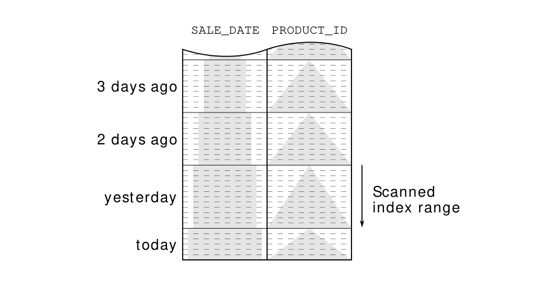

The sort operation SORT ORDER BY disappeared from the execution plan even though the query still has an order by clause. The database exploits the index order and skips the explicit sort operation.
Even though the new execution plan has fewer operations, the cost value has increased considerably because the clustering factor of the new index is worse (see “Automatically Optimized Clustering Factor” on page 133).
At this point, it should just be noted that the cost value is not always a good indicator of the execution effort.
For this optimization, it is sufficient that the scanned index range is sorted according to the order by clause. Thus the optimization also works for this particular example when sorting by PRODUCT_ID only:
SELECT sale_date, product_id, quantity
FROM sales
WHERE sale_date = TRUNC(sysdate) - INTERVAL '1' DAY
ORDER BY product_id;In Figure 6.1 we can see that the PRODUCT_ID is the only relevant sort criterion in the scanned index range. Hence the index order corresponds to the order by clause in this index range so that the database can omit the sort operation.
